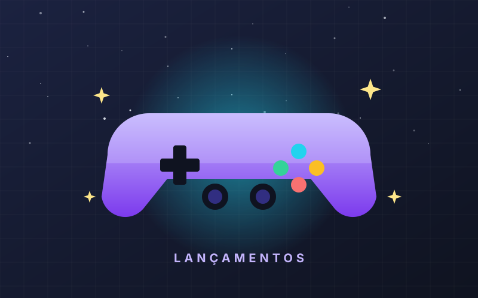

Lançamentos
O que chega em novembro
Calendário do mês com as datas, as plataformas e um resumo honesto do que esperar de cada jogo — incluindo o que entra de graça nas assinaturas.
Ver os lançamentos →